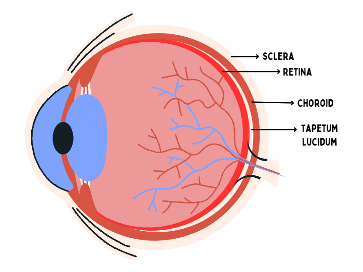

Have you ever shined a flashlight at your pet cat or dog in the dark and noticed their eyes glowing back at you? This phenomenon, known as "eyeshine," can be both fascinating and a little eerie. It's a common trait in many animals, especially those that are active during the night. Let's explore why this happens in simple terms.
The Basics of Eye Structure
To understand why some animals' eyes glow in the dark, we need to start with the basics of how eyes work. All eyes, whether human or animal, have a similar structure.
Our eyes consist of a layer called the retina, which contains specialized cells called photoreceptors. When light enters the eye, it passes through the retina and is absorbed by the photoreceptor cells. They convert the light into electrical signals and are transmitted to the brain via the optic nerve.
But in some animals especially the ones that go out at night, there is a specialized layer of tissue called the Tapetum lucidum right behind their retinas. The tapetum lucidum is a reflective layer of tissue located behind the retina. Its primary function is to improve vision in low-light conditions. It acts like a mirror, reflecting light back through the retina, giving it a second chance to be detected by the photoreceptors.
In animals with a tapetum lucidum, any light that isn't initially absorbed by the photoreceptor cells can pass through the retina and reach the tapetum. The tapetum then reflects this light back to the photoreceptors on the retina, thus giving them a second chance to detect the light. This enhances the the animals' ability to see in low-light conditions such as during night time.
Some of the reflected light also comes out of the eyes creating the appearance of eyeshine, where the animal's eyes appear to glow or shine when light is directed at them. The color of the eyeshine can vary depending on the animal species. For example, some animals have a green eyeshine, while others may exhibit yellow, blue, or red eyeshine.
This phenomenon is particularly noticeable in nocturnal animals that have adapted to low-light environments, such as cats, dogs, raccoons, and deer. It helps these animals to have better night vision and allows them to see more effectively in the dark.
Why Do Eyes Shine Different Colors?
The color of the eyeshine varies depending on several factors, including the type of animal, the age of the animal, and the specific characteristics of their tapetum lucidum. Common eyeshine colors include green, yellow, blue, and red.
- Cats and dogs often have green or yellow eyeshine.
- Deers and horses might exhibit blue eyeshine.
- Alligators have a distinctive red eyeshine.
The specific composition and structure of the tapetum lucidum, along with the angle of the light, contribute to these variations.
Evolutionary Advantages of Eyeshine
The development of the tapetum lucidum is an evolutionary adaptation that provides several benefits to animals:
1. Enhanced Night Vision: Animals with a tapetum lucidum can see better in low-light conditions. This is crucial for nocturnal animals that need to hunt or avoid predators at night.
2. Improved Depth Perception: The increased light sensitivity helps animals judge distances more accurately in the dark, which is essential for catching prey or navigating through complex environments.
3. Increased Survival Rates: By being able to see better in the dark, these animals have a higher chance of finding food and avoiding danger, leading to better survival and reproduction rates.
Examples of Animals with Eyeshine
Let’s take a closer look at some animals known for their glowing eyes:
1. Cats: Domestic cats and their wild relatives, like lions and tigers, have a highly effective tapetum lucidum. This adaptation makes them excellent nocturnal hunters.
2. Dogs: Many dog breeds exhibit eyeshine, which is a remnant of their wild ancestors who needed to hunt at dawn and dusk.
3. Deer: Deer are crepuscular, meaning they are most active during twilight. Their eyeshine helps them see during these low-light periods.
4. Raccoons: These nocturnal foragers rely on their eyeshine to search for food at night.
5. Owls: Although owls are primarily reliant on their acute hearing for hunting, their eyes also possess a tapetum lucidum to enhance their night vision.
Eyeshine in Humans
Humans do not have a tapetum lucidum, which is why our eyes do not glow in the dark. Our night vision is significantly less effective compared to many animals. However, there are instances where human eyes can appear to glow under certain conditions, such as in flash photography. This effect, known as "red-eye," occurs when the camera flash reflects off the blood-rich retina at the back of the eye.
Myths and Legends
Eyeshine has fascinated humans for centuries, leading to various myths and legends. Some cultures believed that animals with glowing eyes had supernatural powers or were associated with spirits. These stories often reflected a mixture of awe and fear, rooted in the mysterious and captivating nature of eyeshine.
Practical Implications
Understanding eyeshine has practical implications in several fields:
- Wildlife Photography: Photographers use knowledge of eyeshine to capture stunning images of animals at night.
- Road Safety: Eyeshine helps drivers spot animals on the road at night, reducing the risk of collisions.
- Pet Care: Recognizing normal eyeshine in pets can help owners identify potential eye problems early.
Conclusion
The glow in some animals' eyes is a remarkable adaptation that enhances their vision in low-light conditions. The tapetum lucidum reflects light back through the retina, giving these animals a second chance to detect it and see better in the dark. This adaptation offers numerous advantages, from improved hunting and navigation to increased survival rates.
Whether it’s the stealthy prowling of a cat at night or the vigilant gaze of a deer at dusk, eyeshine is a testament to the incredible diversity and adaptability of the animal kingdom. So, the next time you see a pair of glowing eyes in the dark, you’ll know that it’s nature’s way of helping these creatures see the world in a whole new light.